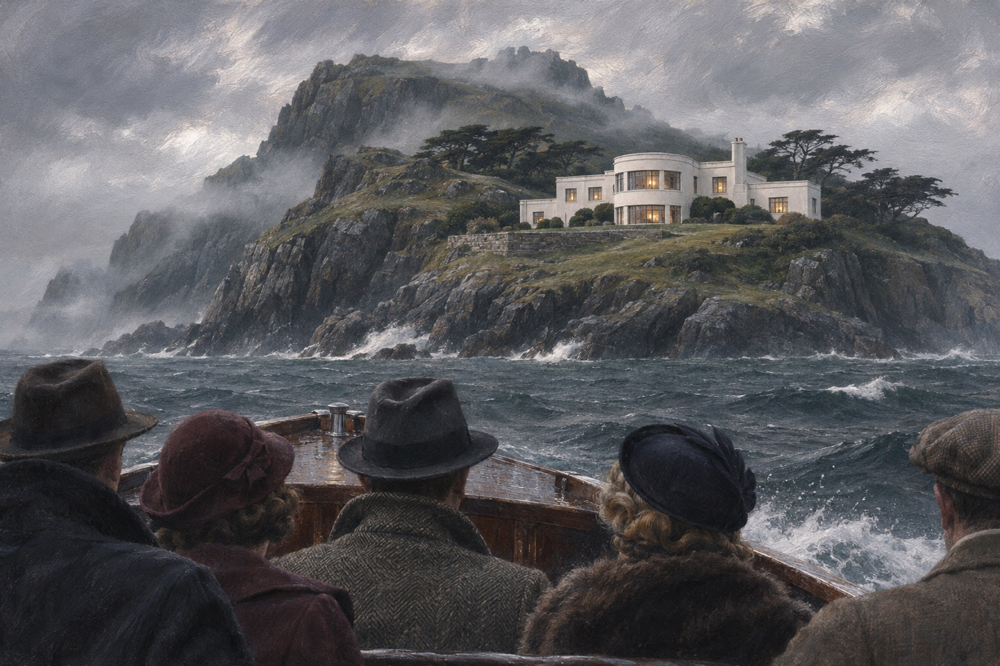

八封信
八个人在同一天收到信，笔迹不同，内容一样：一位不愿透露姓名的朋友邀请您到士兵岛小住，一切费用已付。签名是两个字母：U. N.。有人以为是旧友，有人以为是生意，有人把它当成一个假期。医生阿姆斯特朗把信放进外套口袋时想，欧文这个姓，他好像在哪听过。他想不起来了。沃格雷夫法官的信封上贴着一张便签：希望您能来，岛上很安静，适合读书。他把便签对着光看了看，笑了。他这一生收过很多请柬，没有一张是请他去看别人死的。
渡船
船夫纳拉科特把八个人一批批送上岛。他一句话也不多说，只在开船前问了一句：你们都是欧文先生请的？有人说是。他点点头，把缆绳解开。船靠岸时，他把行李扔上码头，说：下午我来接你们，如果你们还在。有人笑他说笑话。他没有笑。维拉是最后一个上船的。她站在船头，看岛越来越近，忽然觉得这个岛的形状像一头趴着的兽。她把这个想法说给旁边的人听，那人说：你想太多了。

管家夫妇
罗杰斯先生和罗杰斯太太已经先到了。他们把八个房间收拾好，餐桌摆上十份餐具。有人问：还有两位客人？罗杰斯说：主人和女主人。可主人一直没来。晚饭前，客厅里的留声机忽然响了，一个冷静的声音念出每一个人的名字，念完之后说出他们做过的事。屋子里没有人动。罗杰斯太太端着汤出来，手在抖。有人问她怎么了，她说没事，只是这屋子太静。罗杰斯在旁边接了一句：主人不在，总是这样。他说这句话的时候低着头，谁也没有看清他的脸。
童谣
每个房间的墙上都裱着一首童谣，一共十段，讲十个小士兵怎么一个接一个地死掉。维拉把那首童谣从头读到尾，读到「一个也不剩」的时候笑了一下，说：谁挂的这种东西。她把它摘下来，想扔进壁炉，手举到一半又放下了。她把它挂回原处，位置摆得比原来正。童谣下面印着十个小士兵的图案，一个一个排着队，最后一个手里拿着一根绳子。维拉数了两遍，都是十个。她把手指按在最后一个图案上，指尖有点凉。
第一杯酒
马斯顿给自己倒了一杯威士忌，一口喝下去，忽然呛住。他抓着喉咙，脸变成紫色，倒在地上抽了几下就不动了。医生跑过去，闻了闻杯子，说：氰化钾。有人在酒里下了氰化钾。屋外下起大雨，渡船早就走了。十个人里，有一个再也不会说话。马斯顿倒下去的时候手里还攥着杯子。杯子摔在地毯上，没有碎。隆巴德第一个冲过去，摸了摸他的脉搏，抬起头摇了摇头。客厅里没有人喊，只有雨点打在窗上的声音。
长眠
罗杰斯太太昨夜吃了医生给的安眠药，一直没有醒。医生去看的时候，她的脸已经凉了。药量不对——不是多一点，是多很多。罗杰斯坐在床边，说她昨天还好好的。法官问他：她昨晚说了什么。罗杰斯说：她说她想回家。屋里的人都没有接话。餐桌上，小士兵的瓷像少了一个。罗杰斯说，太太昨晚睡前跟他说，这屋里有些东西不对。他问什么东西。她说不上来，只说听见有人在走廊上走来走去。他说那是房子旧了。现在他坐在床边，一遍一遍地说：我不该那么说。
没有欧文
八个人把整座岛搜了一遍。房子不大，没有地窖，没有暗门，没有第十一个人。欧文先生不存在。那个买下岛的人用的是一连串假名，最后一层是一个已经死掉的中间人。法官坐在椅子上说：我们是被人请来受死的。隆巴德笑了一声，说：那我们就等着。他说完，看了看窗外的海。他们把人名一个一个念出来：欧文、欧文太太，还有一个叫莫里斯的中间人。念到最后谁都不说话了。法官说：这栋房子里只有我们十个，也就是说，凶手在我们中间。他说完，把手杖在地板上顿了一下。
将军
麦克阿瑟将军一个人坐在海边的椅子上，看着对岸。他说：我在这里很安心。维拉说：天要黑了，回去吧。他说：你先走。半小时后有人来找他，他还坐在那儿，后脑上有一个洞，血已经凝了。旁边放着一块石头，石头上没有指纹。潮水正在涨，声音很大。维拉在他旁边站了一会儿，说：将军，这里风大。他说：我知道。她又说：您在想什么。他说：想一件很久以前的事，我一直以为自己做对了。他说完这句，就没有再开口。
劈柴
罗杰斯一早去柴房劈柴，说要给大家烧热水。中午他没回来。有人去找，看见他倒在柴堆旁边，斧子落在脚边，后脑上挨了一下。厨房的架子上原本摆着八个小士兵瓷像，现在只剩六个。法官数了一遍，说：他在按童谣杀人，一段一段地对。布洛尔说：那下一个是谁。没有人回答。布洛尔说，斧子是正面挥下去的，可罗杰斯脸上的表情很平静，像是没看见人。法官说：那就是熟人。布洛尔说：这屋里全是熟人。法官说：所以我们要小心的是，谁在什么时候，站在了谁的身后。
蜜蜂
布伦特小姐坐在客厅的窗边织毛线，说头有点晕。大家让她回房躺一会儿。半小时后，医生上楼，看见她坐在床边，脸上有一个小小的针眼，旁边放着一支注射器。窗外飞着几只蜜蜂。她的毛线掉在地上，织了一半，针还插在上面。维拉站在门口，说：她昨天晚上还在说，这一切都是报应。医生拔出针头看了看，说：剂量很大，几秒钟就没了。他把注射器放在床头柜上，手很稳。维拉忽然说：她昨天跟我说，这个岛上没有一个人是无辜的，包括她自己。医生抬起头看了她一眼，没有说话。
失踪的医生
夜里有人敲医生的门，说布洛尔受伤了。医生披上衣服出去，走廊上只有一盏灯。第二天早上，他不在房间里，床没睡过，外套还挂着。剩下的人站在走廊上面面相觑。隆巴德说：他要么自己躲起来了，要么已经死了。维拉说：他不会的。隆巴德说：你认识他几天。四个人把房子翻了一遍，连阁楼都上去了。阁楼里堆着旧箱子，箱子上落着厚灰。隆巴德用刀挑开一个，里面是一件紫色的长袍。他说：这是法官的。布洛尔说：他带这个上岛干什么。没有人回答。
熊
剩下四个人：法官、维拉、隆巴德、布洛尔。他们把门窗全部锁上，谁也不许单独行动。中午布洛尔说要去拿点吃的，走出露台不到三分钟，楼上传来一声闷响。他们跑上去，看见一扇窗户开着，窗下躺着一块做成熊形的石头，布洛尔的头被砸开了。窗外是海，海上什么也没有。他们跑下楼，看见露台的门开着，风把窗帘吹得很高。维拉说：我们三个人，从现在起不许分开。法官说：好。他说这句话的时候手里握着一块怀表，表盖一直开着。后来才知道，他是在看时间。
枪
维拉在海滩上看见隆巴德，他正低头捡什么东西。她手里握着那把枪——那是从布洛尔身上拿到的。隆巴德抬头，说：把它给我。她没有给。他往前走了一步，说：维拉，你听我说。她开了枪。他倒下去，眼睛还睁着。她站在那里，听见自己的呼吸声，很响，像有人在旁边喘气。她放下枪，蹲下去看他。隆巴德的眼睛还睁着，嘴角有一点血。她伸手去合他的眼睛，手抖得合不上。她说：对不起。她说这句话的时候声音很轻，像怕吵醒他。远处海面上有一艘船，很小，一直没有靠近。
绳圈
维拉回到屋里，屋里没有人。她上楼，房间里摆着一张床，床上放着一段绳子，绳圈已经打好。她想起那个孩子，想起自己曾经站在岸边看着水面，没有喊。她搬来椅子，踩上去，把绳圈套在脖子上。窗外月亮很亮，海面一平如镜。她踢开椅子的时候，看见门缝里站着一个人影，一动不动。她最后想到的不是那个孩子，是那封信，那封请她上岛的信。她想，如果那天她把信扔掉，现在应该在哪个教室里，给孩子们读一首诗。她把椅子踢开。楼下的钟响了一下，是九点。
十具尸体
警察上岛的时候，屋里很安静。餐桌上的十个盘子还摆着，蜡烛烧到底。他们一共找到十具尸体：马斯顿在客厅，罗杰斯太太在床上，将军在海边，罗杰斯在柴房，布伦特在客房，医生在礁石下，布洛尔在露台，隆巴德在海滩，维拉吊在卧室，法官穿着紫色长袍死在书房的地上。警察在餐桌上找到一本记事簿，最后一页写着十个人的名字，每个名字后面画了一个勾。十个勾，一个不少。带队的警官把本子合上，说：把这座岛封了。他走出门回头看了一眼这栋房子，忽然觉得它很像一座墓碑。
出处 · 原著第 15 章 警方尾声
法官的死
法官躺在书房的地上，穿着一件紫色的长袍，那是他当法官时的旧衣。他额头上有一个红点，像被子弹打过。验尸的医生说：死亡时间在其他人之前。这句话让在场的人全愣住了——如果是这样，后面的六个人是怎么死的。案子从第一天起就走错了方向，而错的那一步，是他们自己验的。法医把尸体翻过来看了很久，说：这个人死得比他们都晚。警官说：不可能，医生当场验过。法医说：医生验的时候，他还活着。他的脉搏被什么东西压住了，或者他自己屏住了呼吸。屋里没有人说话，窗外的海一直在响。
瓶子
一个渔夫在海上捞起一个瓶子，里面有一份手稿。手稿写得很整齐，开头第一句是：我写这份东西，是为了让人知道，这不是一桩无解的案子。作者署名劳伦斯·沃格雷夫。他写道：我一生判过很多次死刑，从没有亲手执行过。这一次，我想自己动手。手稿是用钢笔写的，字很小，一页一页编了号。渔夫不识字，把它交给了警察。警察读到第三页就站起来了。他后来说：我办了三十年案子，从没见过凶手自己写结案报告的。
出处 · 原著第 16 章 手稿
法官的计划
他先摸清了每个人做过什么，再用一个不存在的名字把他们请到岛上。他杀人的顺序不是随机的：最轻的罪先死，因为他想让剩下的人有时间互相怀疑。他要的不只是十条命，是一场没有人能解开的演出。他写道：我一生追求的是完美，这一次也一样。他写道：我选的这九个人，每一个都在法律上逃脱了。有的证据不足，有的舆论同情，有的根本没上法庭。我不是在替天行道，我只是想看看，当法律不在场的时候，正义能不能自己站起来。
假死
他找到了阿姆斯特朗。医生在岛上已经快疯了，法官说：你只要在所有人面前宣布我死了，剩下的我自己来。医生照做了。他们把他抬到书房，盖上毯子，医生把一块红蜡按在他额头上，说是枪伤。第二天医生就死了——法官不需要活着的同谋。他在手稿里写：这是我唯一一次，向人求助。他写道：阿姆斯特朗是个好人，也是个懦夫。他只问了一句：你会不会连我也杀。我说不会。他信了。我看着他相信的样子，忽然觉得这件事比我想的更有意思。
最后一枪
他坐在书房的椅子上，把手枪的枪口对准自己的额头。他算好了角度、时间、尸体的位置。他写道：我要让警察看见一具穿着法官袍的尸体，然后永远想不明白最后三个人是怎么死的。他扣下扳机之前，最后想到的一句话是：这个案子里，只有一个人是无辜的——那个孩子。他写道：我本来可以活下去，只要把那把枪扔进海里。可那样的话，这个作品就没有结尾。一个没有结尾的故事会被写成悬案，被人在酒馆里猜上几十年。我不喜欢那样。
出处 · 手稿末段
莫里斯
替法官买下士兵岛的人叫艾萨克·莫里斯，一个在市面上混久了的中间人。他收钱办事，从不多问。签完合同的第三天，他在自己的办公室里死了，桌上留着一杯没喝完的酒。警察说是自杀。手稿里提到他时只写了一句：他知道得太多了，但不是我知道的。莫里斯死的那天，法官在伦敦的俱乐部里吃午饭。他后来在手稿里写：我听说他死了，一点也不意外。一个人如果一辈子都在替别人办事，最后总会替自己办一件蠢事。
十个小士兵
童谣的最后一段是：一个小士兵，落单孤零零，悬梁了此生，一个也不剩。维拉吊死的那间屋子里，墙上那张裱框的童谣还在。最后一个瓷像掉在地毯上，摔成了三块。第二天警察推门进来的时候，看见的就是这幅景象——十个句子，十个人，一个不多，一个不少。警察把瓷像的碎片收进证物袋，一共十块。他数了两遍，还是十块。他把袋子封好，在标签上写了日期。那天下着小雨，岛上的草被打得很平，像有人刚刚走过。